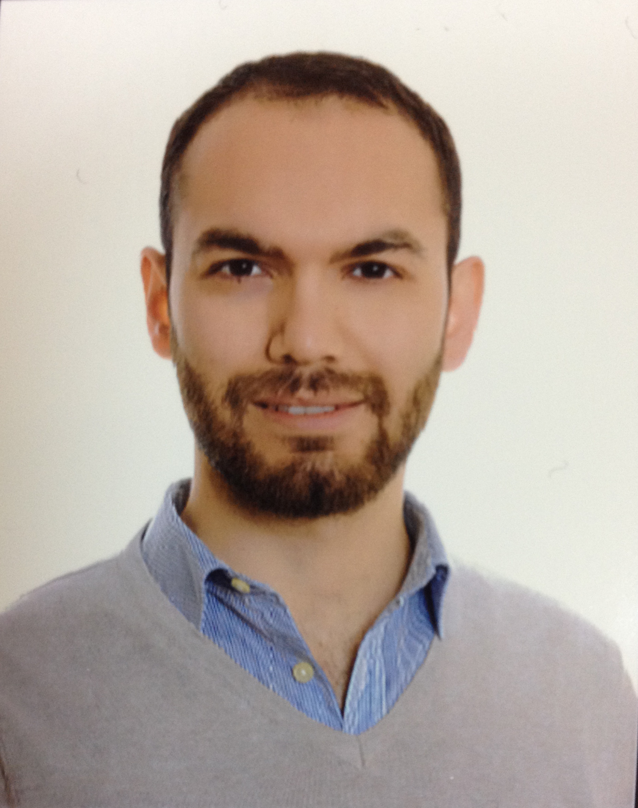

AMDoç. Dr. · Harita Mühendisliği
Harran Üniversitesi · Şanlıurfa, Türkiye
Harran Üniversitesi Harita Mühendisliği Bölümü'nde öğretim üyesi olarak görev yapmaktayım. Araştırmalarım Coğrafi Bilgi Sistemleri (GIS), uzaktan algılama ve makine öğrenmesi teknolojilerinin kentsel ve çevresel problemlere uygulanması üzerine yoğunlaşmaktadır.
I am a faculty member in the Department of Geomatics Engineering at Harran University. My research focuses on the application of Geographic Information Systems (GIS), remote sensing, and machine learning technologies to urban and environmental problems.
Özellikle gönüllü kaynaklı coğrafi veri (Volunteered Geographic Information / OpenStreetMap) kalitesi ve tamamlanmışlık değerlendirmesi, mekansal makine öğrenmesi modelleri ile kentsel ısı adası ve arazi kullanımı analizleri konularında çalışmalar yürütmekteyim. Bu araştırmalar, akıllı şehir planlaması ve çevre izleme sistemleri için güvenilir mekansal veri altyapısı oluşturulmasına katkı sağlamaktadır.
I conduct research on Volunteered Geographic Information (VGI / OpenStreetMap) quality and completeness assessment, spatial machine learning models, and urban heat island and land-use analyses. This work contributes to building reliable spatial data infrastructure for smart city planning and environmental monitoring systems.
Yıldız Teknik Üniversitesi'nde tamamladığım yüksek lisans ve doktora eğitiminin ardından Harran Üniversitesi'nde akademik kariyerimi sürdürmekteyim. Ulusal ve uluslararası düzeyde TÜBİTAK destekli projelerde araştırmacı olarak yer almaktayım. SCI/SSCI indeksli dergilerde çalışmalar yayımlamaktayım.
After completing my MSc and PhD studies at Yıldız Technical University, I have been continuing my academic career at Harran University. I participate as a researcher in TÜBİTAK-funded projects at national and international levels, and publish in SCI/SSCI-indexed journals.
Yıldız Teknik Üniversitesi · 2021
Yıldız Teknik Üniversitesi · 2015
Yıldız Teknik Üniversitesi
Temel çalışma konuları ve uzmanlık alanları
Mekansal veri analizi, CBS tabanlı karar destek sistemleri ve coğrafi veri kalitesi değerlendirmesi üzerine araştırmalar.
Uydu ve hava görüntülerinin işlenmesi, arazi örtüsü/arazi kullanımı sınıflandırması ve değişim tespiti çalışmaları.
Mekansal veri üzerinde makine öğrenmesi ve derin öğrenme algoritmalarının uygulanması.
Gönüllü kaynaklı coğrafi verinin kalitesi, tamamlanmışlığı ve güvenilirliğinin değerlendirilmesi.
Büyük dil modelleri (LLM) ve yapay zekanın coğrafi uygulamaları; mekansal akıl yürütme, OSM etiket sınıflandırması, kartografik tasarım değerlendirmesi ve konum tabanlı yapay zeka sistemleri.
Harita tasarımı ve görselleştirme, projeksiyon sistemleri, işaretleştirme ve kartografik genelleştirme yöntemleri.
Ulusal ve uluslararası hakemli dergilerde yayımlanmış çalışmalar
En son 5 yayın gösteriliyor
Yürütülen ve tamamlanan araştırma projeleri
Duyurular ve ders materyalleri
Ders materyalleri dönem içinde buraya eklenir. Güncel dosyalar için sayfayı düzenli kontrol ediniz.